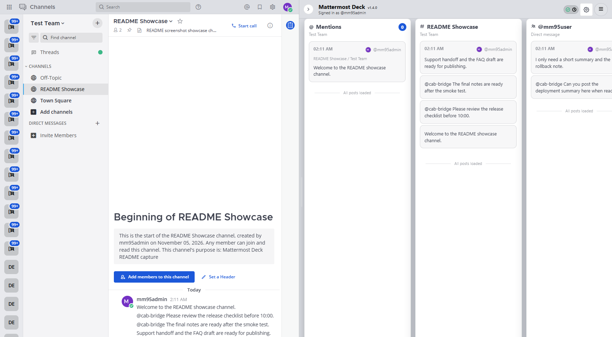

投稿も編集もスレッドの操作も Mattermost 本体の画面のまま使います。Deck が足すのは、読むための一覧だけです。

クリックで拡大します
＋ から追加します。1 つのペインは 1 つの一覧で、同じ種類をいくつ並べても構いません。
@all @channel @here、グループメンション、DM と GM、CRT 有効時のスレッド返信を Mattermost の設定どおりに判定します。既定は横一列です。「ビュー」から上下 2 段へ切り替えられます。
スレッド、検索結果、ピン留め投稿などの右ペインを開くと、その実測幅の分だけ Deck が同じフレームで縮み、メイン表示の幅は開く前のまま保たれます。
Deck の残り幅が 280px を下回る場合は 52px まで折り畳み、右ペインを閉じると指定の幅とスクロール位置に戻ります。
操作欄の「要確認タブを複製」は、元のペインを残したまま同じ対象チームの要確認ペインを隣に作ります。「要確認モードに変更」はタブを増やさず、そのペインの対象チーム・名前・位置を保ったまま切り替えます。
「確認済みにする」で一覧から外れます。直後の 5 秒間は取り消せます。表示が消えた後も、操作欄の確認済み履歴から未確認に戻せます。
投稿の「…」から、そのユーザーの投稿、またはその会話を表示しないよう設定できます。会話の除外は親投稿と今後増える返信にも適用されます。
除外は表示だけに効きます。投稿の取得、Mattermost 本体の通知、既読や確認済みの状態は変わりません。
時刻 投稿者: 本文 の 1 行表示になります。いいえ。ログイン、投稿、編集、スレッド操作は Mattermost 本体のままです。Deck は読むための一覧を右側に足すだけです。
必要ありません。未設定のままでも定期取得で更新します。設定すると WebSocket によるリアルタイム更新に切り替わります。PAT の保存先は既定で chrome.storage.session で、永続保存は明示的に選んだときだけ、クライアント側で暗号化して保存します。
いいえ。Options に保存して Chrome の origin 権限を許可した Mattermost サーバーだけで有効になります。リモートサーバーには HTTPS が必要です。
送られません。拡張が通信するのは設定済みの Mattermost サーバーだけで、第三者の analytics や広告、プロファイリングはありません。
設定、レイアウト、お気に入り、要確認の状態、除外設定です。すべてこのブラウザー内に、サーバーとアカウントごとに保存します。拡張機能を削除すると消えます。
なりません。要確認メンションの「確認済みにする」も、Mattermost の既読とは別の状態です。
Google Chrome 120 以降です。Docker の E2E 全テストを Mattermost 9.5.4 で実行し、経路変更・チーム切り替え・スレッドレイアウト・レスポンシブ動作は 9.5.11、10.11.22、11.8.2 でもリリースごとに確認しています。
Chrome ウェブストアから追加 → Options で Mattermost Server URL を保存 → Mattermost を開いて ＋ からペインを追加。
Chrome ウェブストアで開く